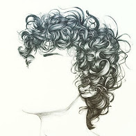

Made with 🛠 & ❤ by me. © 2020
El ecosistema cambiante de un viaje 🚄
Siete de la tarde, el sol detrás... difícil de ver desde la ventana de un ómnibus. Ese mismo sol se puede ver en el reflejo del asiento de adelante, cada tanto... sus rayos refleja en las nubes, dando a entender la profundidad y esponjosidad que manifiestan. A una corta distancia se siente la voz de una niña en otro asiento, imaginando mundos donde sus juguetes tienen vida propia, recreándolo con su voz. Por alguna razón la niña declara que "no se va a dormir en la noche", a lo cual la madre les responde desentendida-mente. Minutos después, una risa seguida de un reproche se escucha en la misma dirección: que habrá pasado?

Gracias al taller infantil del que fuí parte, siento que puedo entender a los niños un poco mejor (y al mismo tiempo me doy más el lujo de sentirme como uno). Me dejó la enseñanza de que los niños tienen sus emociones "amplificadas" ó, como a mi me gusta interpretarlo, con mayor "pureza". Es decir, hay una condición humana de la cual el niño esta más cerca que el adulto. Esa cercanía con su sentir, es lo que le hace llorar, enojarse y reír con extrema fijación de que lo único que existe en el mundo en ese momento es lo que provocó ese llanto, enojo y risa.
Por qué traigo la pureza del niño cuando quiero hablar del ecosistema cambiante de un viaje? Primariamente porque me distraigo 😅 y en segundo lugar por que tiene que ver. La "pureza de sentir" del niño viene del descubrimiento de algo nuevo, del encontrar una nueva experiencia. Aprendemos de esas experiencias para que, la próxima vez que nos la encontremos, no tengamos la misma reacción extremista que nos nubla de nuestro raciocinio y nuestra capacidad de actuar: aprendemos. En ese aprendizaje, las cosas nos empiezan a parecer comunes, normales, y ese sentir de pureza se va desvaneciendo con la adultez. Pero pregunto: Nos quedamos sin nada más por "sentir por primera vez" o "sentir con los ojos de un niño"?... La realidad es que no,
Y ahora, bajo es premisa, me pregunto: no será el viaje, entre todas sus causas, la búsqueda por lo nunca vivido? Nuevos lugares, vistas, costumbres, culturas, actividades. Ese ecosistema cambiante que en ocasiones nos desafía y asusta, nos relaja y esclarece, pero del que siempre terminamos aprendiendo algo? Yo creo que el viaje es todo eso... y por eso quiero viajar y seguir viajando... 🛫